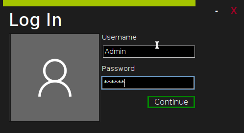

Metro
Metro is a simple semi-encrypted notekeeping app written in java.
A gradle version of this.
How Do I Get It?
Binaries are avaible in the releases tab above.
Default Credentials
User: Admin
Password: Hunter2
Deleting the users.ser file restores the user above. (deletes all data and users too :D)
Removing Default Credentials
-
Login with it.
-
Head in to the settings and add a new user
-
Log out of the default user
-
Login with your new user
-
Head in to the settings and delete "admin"
-
You are done!
Screenshots

The Files The Program Uses and Creates
The program creates 2 files upon the user saving their notes or making changes to usermanagement:
users.ser . . . . . . . . . remembers all users and their password hashes
userdata.ser. . . . . . . remembers all userdata (notes)